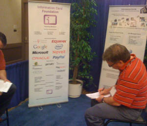

ICF @ DIDW Sept 2008
At DIDW in 2007, the term 'user-centric' identity was called 'new school' identity. Kim Cameron introduced the term claims as a way of accurately generalizing the data fields on Information Cards. But the concept of Information Cards as a metaphor to wield the claims that others made about you was not the overarching meme at DIDW last year.
But at DIDW 2008, Information Cards and the Information Card Foundation have moved mainstream.
The Higgins Project, the basis for open source information card implementations demonstrated by Novell (The Bandit Project) Oracle, Parity, and IBM, has created an open source implementation of Information Card selectors compatible with Microsoft CardSpace. A SAML-plug-in for Higgins was built for Google. Where there used to be one organization (Liberty) promoting SAML, there are now a triumverate of organizations -- Liberty has been joined by the Open ID Foundation supporting Open ID and the Information Card Foundation supporting Information Cards. Thus the Venn of Identity diagram from Concordia's Eve Maler now has active established organizations in each sphere.
Examples of the impact Information Cards had on this conference:
- I4: OSIS Interoperability Workshop. sponsored by the Information Card Foundation, was the fourth interoperability event held since June 2006 (Burton Catalyst hosted the first one). In just sixteen months, the industry has moved from talking about a network of interoperable information card selectors, identity providers, and relying parties to 57 projects and products running over 1200 tests to ensure that products from different companies not only interoperate, but move toward consistent behavior with a large baseline of features and exception handling tests. Mike Jones summarized the results at the end, and began the discussion for I5.
- Jamie Lewis of the Burton Group in his keynote "State of the Industry" described how far information cards have come. Last year, he showed a collection of interstellar dust that was Higgins, another was Cardspace; neither were planets. This year he highlighted the formation of the Information Card Foundation "as a welcome development" by a group of leading members of the identity community along with key influencing companies. Together, they forged this new organization to promote the simple user metaphor that empowers ordinary users to control the complex plumbing required for trusted, verifiable, flexible digital identity on the web.
- Kim Cameron's keynote again addressed claims, but he was very pleased to report the birth of the Information Card Foundation as a milestone toward ultimately improving simplicity and security for all Internet users by at least an order of magnitude. He introduced new claims details, laying the groundwork for more development. But to the user, the metaphor doesn't change. Information cards simplify both the security and interoperability plumbing that is so necessary, but should be invisible during digital transactions. To render things as simple as possible but no further.
- Dale Olds ran a panel called "The Open Source Community's Contribution to User-Centric Identity" which included, Paul Trevithick, Mary Ruddy, Drummond Reed, and Pamela Dingle. All are Community Steering members of the ICF and contributors to the open source components that make information cards the center of the plumbing needed for users to prove their Internet claims without revealing personal data.
In the exhibit area, the Information Card Foundation booth afforded us the opportunity to introduce the concept of Information Cards and our Foundation to enterprise customers who are grappling with the very real issues that Information Cards can address -- building trusted verified real-time claims, minimizing storage of personal information, and supporting role management and user provisioning within rapidly changing companies (where policies, re-organizations, roles, and responsibilities are in constant flux).

Paul Madsen chaired the breakout: "Bootstrapping Identity Protocols: A Look at Integrating OpenID, ID-WSF, WS-Trust, and SAML." Along with Paul, ICF Board members Patrick Harding and Mary Ruddy described how all of these protocols can interoperate using Higgins components and/or information cards.
On Wednesday morning, this picture was on the front page of USA Today.
If one had not been deluged with the multitude of stories regarding identity breaches in the past year, one could imagine it having been part of a deliberate build up to Doc Searls' keynote: On VRM (Vendor Relationship Management) and Identity. At last year's DIDW, Phil Becker introduced Doc by saying that "Doc was right" about how the world would swing around to valuing the customer as a mutual business partner, and that technology is accelerating this change. Doc introduced the relationship button as a digital way to indicate the status of a digital relationship between parties willing to connect under mutually favorable terms.
This theme resonates with one introduced by Bob Blakely at Burton Catalyst 2008 San Diego -- that the terms "user-centric identity" and "enterprise-centric identity" infer "forms of abuse". Neither term emphasizes the digital relationship that is essential to mutual trust. It is the relationship that is key -- healthy ones are mutually beneficial, cooperative, and lead to more business. Information Cards provide the plumbing to form digital relationships that are persistent as long as both parties agree (and severable when necessary). Terms may be proposed by either side. Electronic transactions with trusted verifiable claims lower costs and make treating each customer as a business partner possible even in the face of increasing complexity.
As one enterprise executive told me, "What I like [about Information Cards] is that with verifiable claims from multiple trusted sources, I can more accurately predict risk assessment -- a key to growing my business, and lowering costs."
To build a flexible identity infrastructure that is as simple as it can be but no simpler, is to start with the human being as the fundamental component. We must account for all the complexities each of us represents, whether it is multiple roles, varying job responsibilities, or different personas (e.g. professional, political, religious, hobby, etc.) The identity metasystem that allows any of us to prove the claims we make on the Internet and have them accepted by relying parties best revolves around a simple metaphor -- a wallet and cards. These cards can be built to interoperate with every identity and security system, and can handle the vast dynamic range of claim types. Information Cards as the basis for digital relationships is the best way to maintain trust -- the expectation of future behavior -- that is essential to the entire social and commercial fabric of our civilization. In short, it is the only way we can act digitally with the responsibility and risk assessment necessary to grow our economy together.
"Perhaps these sentiments are not yet sufficiently fashionable to procure them general favor; a long habit of thinking a thing wrong, gives it a superficial appearance of being right, and raises at first a formidable outcry of defense of custom. But the tumult soon subsides. Time makes more converts than reason."
- Common Sense, Thomas Paine 1776